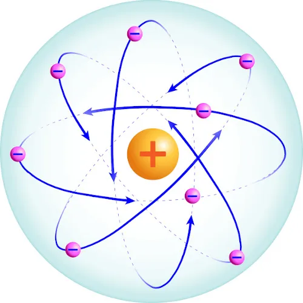

Radioatividade
Exercícios
1. Quais os pontos que diferenciam os processos de Fissão e Fusão Nuclear?
2. Como se pode definir o tempo de meia vida?
3. A bomba de hidrogênio funciona de acordo com a seguinte reação nuclear: reto H com 1 pré-subscrito com 2 pré-sobrescrito espaço mais espaço reto H com 1 pré-subscrito com 3 pré-sobrescrito espaço seta para a direita espaço He com 2 pré-subscrito com 4 pré-sobrescrito espaço mais espaço reto n com 0 pré-subscrito com 1 pré-sobrescrito espaço mais espaço energia. Portanto podemos afirmar:
A. é reação de “fusão”.
B. é reação de “fissão”.
C. é reação onde ocorre apenas emissão de partículas alfa.
D. é reação onde ocorre apenas emissão de partículas beta.
E. é reação onde ocorre apenas emissão de raios gama.
4. Fissão nuclear e fusão nuclear:
A. Os termos são sinônimos.
B. A fusão nuclear é responsável pela produção de luz e calor no Sol e em outras estrelas.
C. Apenas a fusão nuclear enfrenta o problema de como dispor o lixo radioativo de forma segura.
D. A fusão nuclear é atualmente utilizada para produzir energia comercialmente em muitos países.
E. Ambos os métodos ainda estão em fase de pesquisa e não são usados comercialmente.
5. Como o tempo de meia vida interfere nos acidentes nucleares?
6. A radioatividade emitida por determinadas amostras de substâncias provém:
A. da energia térmica liberada em sua combustão.
B. de alterações em núcleos de átomos que as formam.
C. de rupturas de ligações químicas entre os átomos que as formam.
D. do escape de elétrons das eletrosferas de átomos que as formam.
E. da reorganização de átomos que ocorre em sua decomposição.
6. Faça uma breve explanação sobre o surgimento da Radioatividade:
7. Qual foi o objetivo do Projeto Manhattan?
8. O avanço científico e tecnológico da física nuclear permitiu conhecer, com maiores detalhes, o decaimento radioativo dos núcleos atômicos instáveis, desenvolvendo-se algumas aplicações para a radiação de grande penetração no corpo humano, utilizada, por exemplo, no tratamento do câncer. A aplicação citada no texto se refere a qual tipo de radiação?
A. Beta
B. Alfa
C. Gama
D. Raio X
E. Ultravioleta
9. Quais consequências o Projeto Manhattan proporcionou há sociedade?
10. Sobre os cinco modelos atômicos, estruturado pelos cientistas. Descreva sua evolução:
História
Uso e Aplicações
Acidentes Radioativos
Fisão e Fusão Nuclear
Tipos
Tempo de Meia Vida
Modelos Atômicos

Exercícios